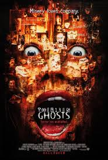
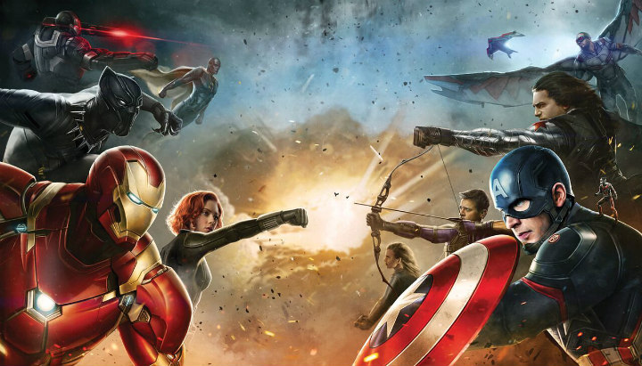
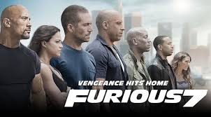
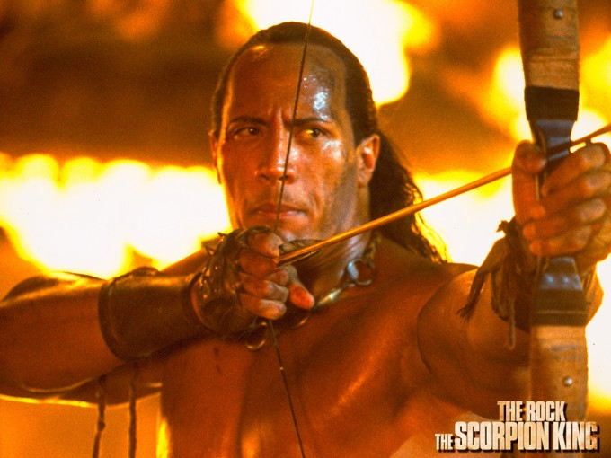

Todos los productos
Estos son nuestros productos:
-
Suscripción V.I.P
La familia Kriticos vive en perfecta armonía, hasta que una desgracia acaba con la vida de Jean, la esposa de Arthur y madre de Kathy y Bobby. Una tarde, mientras ellos desayunan en un departamento de mala muerte junto a la niñera; reciben la visita de unabogado, quien les informa que el tío lejano de Arthur les ha dejado como herencia una magnífica casa. La familia visita la vivienda y al encontrarla tan sofisticada y ultra moderna, deciden dar un paseo por el interior de la misma -
Suscripción Premium
El 2016 llegará cargado de grandes producciones cinematográficas que tendrán a todo tipo de espectadores en permanente visita a las salas de cine. Los fanáticos de los superhéroes disfrutarán de grandes entregas como ‘Capitán América, Civil War’ y ‘Batman Vs Superman: Dawn Of Justice’. Además, tendrán la oportunidad de ver todo tipo de películas de terror, cintas basadas en videojuegos y remakes que seguramente darán mucho de qué hablar. Aquí puedes consultar su fecha de estreno. -
 Suscripción "Quiero ir de todos modos"
Suscripción "Quiero ir de todos modos"
Titanic es una película estadounidense dramática-de catástrofe de 1997 dirigida y escrita por James Cameron y protagonizada por Leonardo DiCaprio, Kate Winslet, Billy Zane, Kathy Bates, Gloria Stuart y Bill Paxton.2 3 La trama, una epopeya romántica,3 4relata la relación de Jack Dawson y Rose DeWitt Bukater, dos jóvenes que se conocen y se enamoran a bordo del transatlánticoRMS Titanic en su viaje inaugural desde Southampton, Inglaterra, a Nueva York, EE. UU., en abril de 1912. Pertenecientes a diferentes clases sociales, intentan salir adelante pese a las adversidades que los separarían de forma definitiva, entre ellas el prometido de Rose, Caledon «Cal» Hockley (un adinerado del cual ella no está enamorada, pero su madre la ha obligado a permanecer con él para garantizar un futuro económico próspero) y el hundimiento del lujoso barco tras chocar con un iceberg. -
Suscripción "Quiero ir de todos modos"
Después de los acontecimientos de Fast & Furious 6, Owen Shaw (Luke Evans) queda en estado de coma en un hospital deLondres, Inglaterra. Deckard Shaw (Jason Statham), el hermano mayor de Owen, comienza una caza mortal para matar al hombre y al equipo que dejó inválido a su hermano menor. Dominic "Dom" Toretto (Vin Diesel), Brian O'Conner (Paul Walker) y el resto de su equipo han regresado a Estados Unidos para vivir una vida normal, pero a Brian le cuesta trabajo acostumbrarse a una vida tranquila y trata de ser un buen padre con su hijo Jack.. -
Suscripción "Quiero ir de todos modos"
El rey Escorpión es una película dirigida por Chuck Russell, con Dwayne Johnson en su primer papel como protagonista (debutó en The Mummy Returns (2001)) y estrenada en el año 2002. La cinta, que es una precuela de La momia (1999), tuvo una secuela: El rey Escorpión. El nacimiento de un guerrero (2008). El rey Escorpión narra los orígenes de Mathayus el arcadio y su ascenso al trono. El nombre Horus Escorpión se refiere a un gobernante del periodo predinástico de Egipto. La película refleja, vagamente, la historia de este personaje y el estilo de vida de la población de la zona, la cual está repleta de anacronismos, como el uso de espadas de acero (en plena Edad del Cobre), la utilización de pólvora en varias escenas mucho antes de ser inventada por los chinos y edificios muy bien decorados.